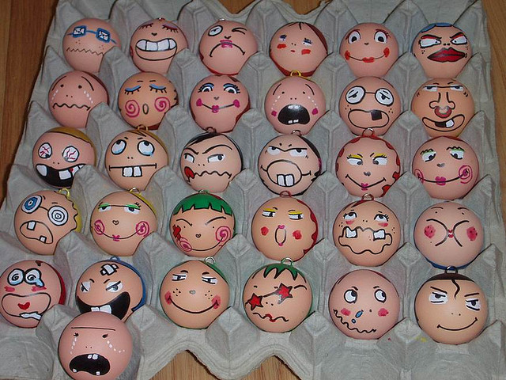

Duis auctor imperdiet leo, quis auctor velit consectetur non. Pellentesque fermentum enim et tellus rhoncus elementum. Aliquam cursus Fringilla Venenatis.
Vestibulum eget quam ac arcu ornare volutpat. Nunc ut placerat lacus. Nam nisi eros, luctus at tortor ac, Mattis Rutrum Lacus. Cras cursus ultrices eros ac lacinia.
Nulla dapibus ligula quis lectus porttitor tempor. Cras a dolor et ante dignissim consectetur. Nullam aliquam, justo vitae lacinia gravida, nisl nisl elementum metus, ut interdum diam sem nec mauris:
